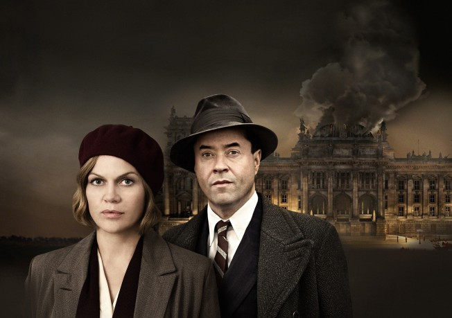

#8800 Nacht über Berlin
 
 IMDB-Wertung: 6.3 / 10
IMDB-Wertung: 6.3 / 10  Metascore: 0
Metascore: 0 
Berlin, 1932. The Weimar Republic is torn apart in the struggle between right- and left-wing extremists and Berlin is a powder keg. Nightclub singer Henny Dalgow get to know the Social Democratic congressman and Jewish doctor Albert Goldman, and the two become a slightly odd couple. Albert is a sworn pacifist after his experiences in the First World War. Contrary to his beliefs he agrees to act as courier for his brother Edwin, who belongs to a radical communist cell.
Jahr: 2013
Dauer: 113 Minuten
FSK: 12
Land: Deutschland Studio: Alive Vertrieb und MarketingTonspuren:
Untertitel:
Auflösung: 1080p (1920x1080) Größe: 6082 MB
Genre: Drama
Regisseur: Friedemann Fromm
Drehbuch: Rainer Berg
Soundtrack: Florian de Gelmini
Darsteller:
 Anna Loos als Henny Dallgow
Anna Loos als Henny Dallgow Jan Josef Liefers als Albert Goldmann
Jan Josef Liefers als Albert Goldmann- Claudia Eisinger als Uta Dallgow
- Ingrid Mülleder als Hedwig Dallgow
 Franz Dinda als Edwin Goldmann
Franz Dinda als Edwin Goldmann- Frank Sieckel als Hüne Lanz
 Harvey Friedman als Leo Fraenkel
Harvey Friedman als Leo Fraenkel- Max Raabe als Himself
- Sabine Winterfeldt als Ida
- Sven Lehmann als Erhart von Kühn
- Stella Hilb als Vera
- Christian Erdmann als Hans
- Marie Gruber als Gunda
 Jürgen Tarrach als Matze Belzig
Jürgen Tarrach als Matze Belzig- Naomi Krauss als Ruth Fraenkel
- Hilmar Eichhorn als Willi Dallgow
- Johannes Klaußner als Marinus van der Lubbe
- J.W. Carsle als Bar man
- Wolfgang Lindner als NS-Scherge
- Christian Mock als Banker
- Dennis Oestreich als verletzter Mann im Wartezimmer
- Sabrina Sauer als Reisende
- Tom Sielski als SA-Sturmbannführer Heck
- Ralf Tempel als Hitler
- René Werner als civ. polit. Police Officer
- Lukas Gensel als Junge (uncredited)
Datei: X:\2013(N-Z)\Nacht über Berlin (2013, FSK12, 1920x1080).mkv seit 30.04.2018
Festplatte: HD 2013(I-Z)-2014(A-Z)
 Es gibt insgesamt 133 Filme in der Gruppe '2013(N-Z)'
Es gibt insgesamt 133 Filme in der Gruppe '2013(N-Z)'